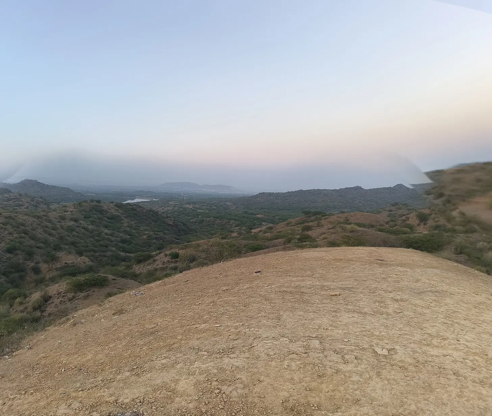
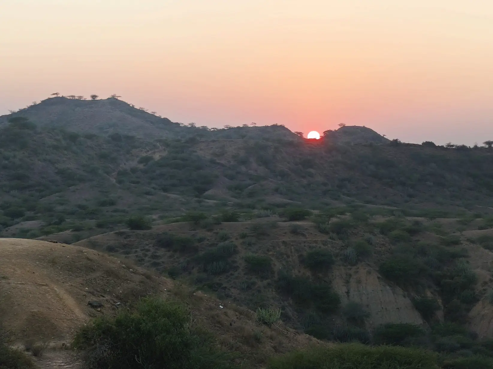
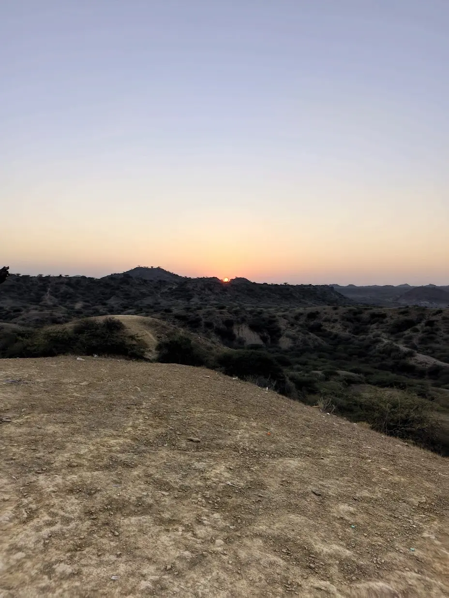
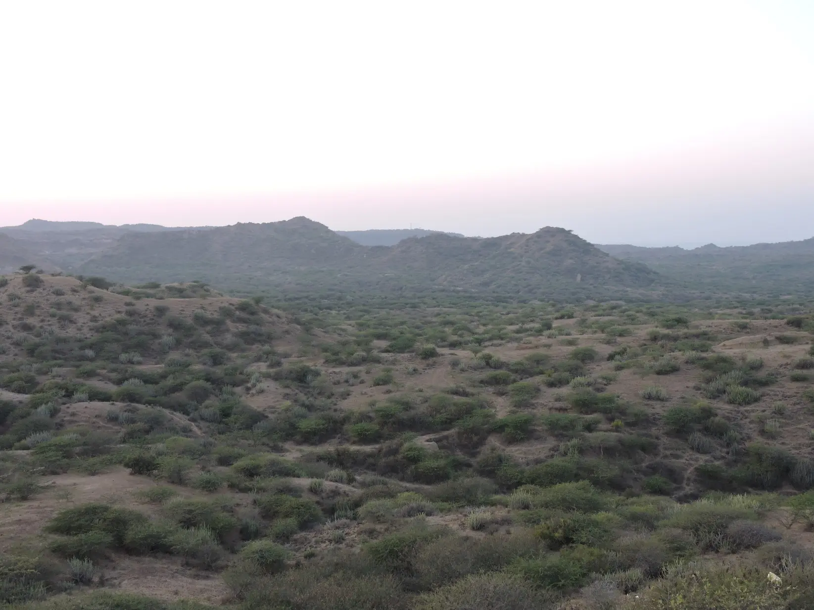

Jadura is a hidden gem just 8 kilometers from Bhuj, offering one of the most spectacular sunset viewpoints in the region. This elevated spot provides unobstructed panoramic views of the surrounding Kutch landscape, making it a favorite among photographers, couples, and anyone seeking a peaceful retreat from city life. As evening approaches, the sky transforms into a canvas of vibrant oranges, pinks, and purples, reflecting beautifully over the arid terrain below. The location's proximity to Bhuj makes it perfect for a quick evening escape—you can leave the city around 5 PM and return within a couple of hours. Unlike more developed tourist spots, Jadura retains a raw, natural charm with minimal infrastructure, allowing visitors to connect directly with nature's beauty. The gentle breeze, changing colors, and serene atmosphere create moments of pure tranquility that contrast sharply with the day's activities.
Who Should Visit
- Photographers: Capture stunning sunset colors, silhouettes, and landscape photography in natural golden hour light.
- Couples: Enjoy romantic sunset moments in a peaceful, private setting away from crowds.
- Nature Lovers: Experience the beauty of Kutch's landscape transforming during sunset hours.
- Quick Visitors: Perfect for those with limited time who want a memorable Kutch experience close to Bhuj.
How to Reach
- From Bhuj (5km): Short 15-25 minute drive via local roads. Hire a taxi (₹200-400 return) or rent a two-wheeler.
- Best Mode: Two-wheeler (bike/scooter) offers flexibility to explore and stop at scenic spots en route.
- Timing: Arrive 30 minutes before sunset (around 5:30-6:00 PM in winter, 6:30-7:00 PM in summer) to find a good spot.
- Route: Ask locals for Jadura sunset point. The road is straightforward from Bhuj center.
When to Visit
November to February (Winter): Best season. Clear skies with minimal dust, perfect
visibility, and comfortable evening temperatures (15-25°C). Sunset around 6:00-6:30
PM.
March to June (Summer): Hotter evenings but spectacular sunsets. Some
haze may affect visibility. Sunset around 7:00-7:30 PM.
July to October (Monsoon &
Post-Monsoon): Cloud formations create dramatic skies but weather can be unpredictable.
Green landscape adds beauty.
Location & Gallery



